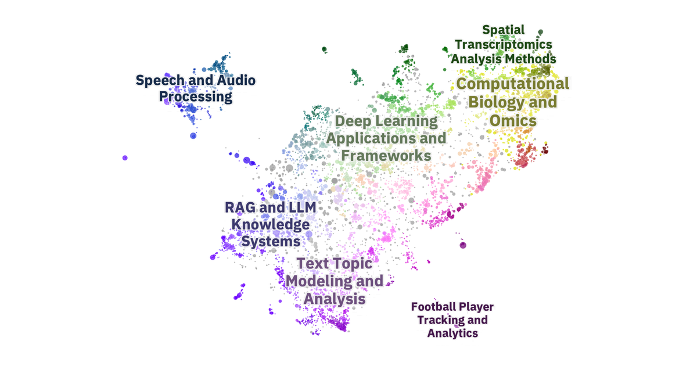

UMAP Dependents Map
7,250 projects that use or declare umap-learn, of the 10,509 that GitHub's dependency graph listed in October 2026.
Each map lays out the open-source projects that depend on one package, placed by what their READMEs say. Projects that sit close together do similar things.

7,250 projects that use or declare umap-learn, of the 10,509 that GitHub's dependency graph listed in October 2026.